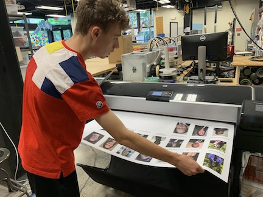
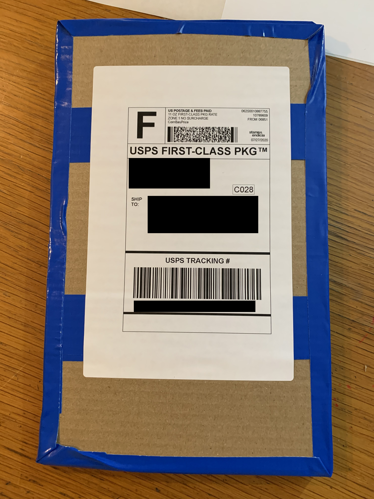
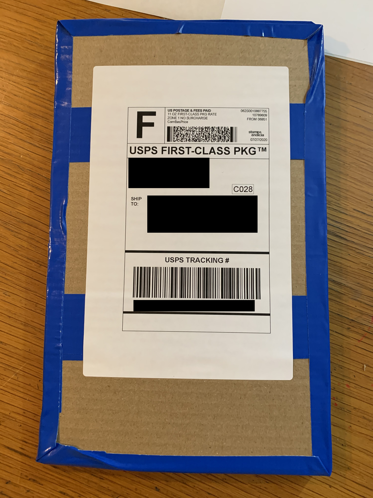
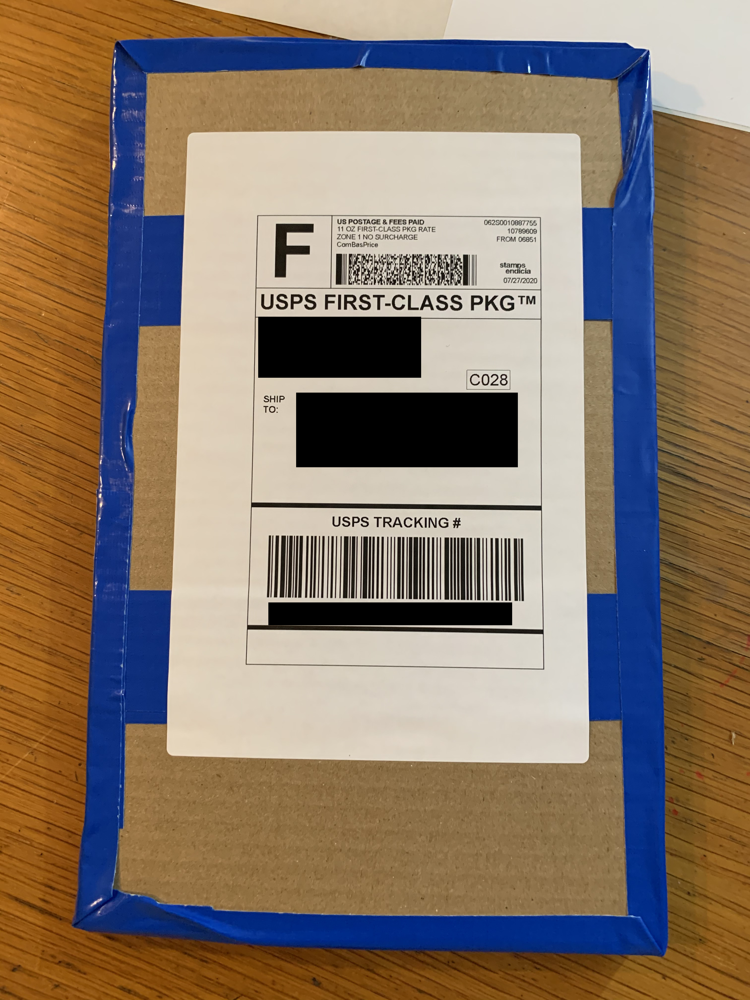
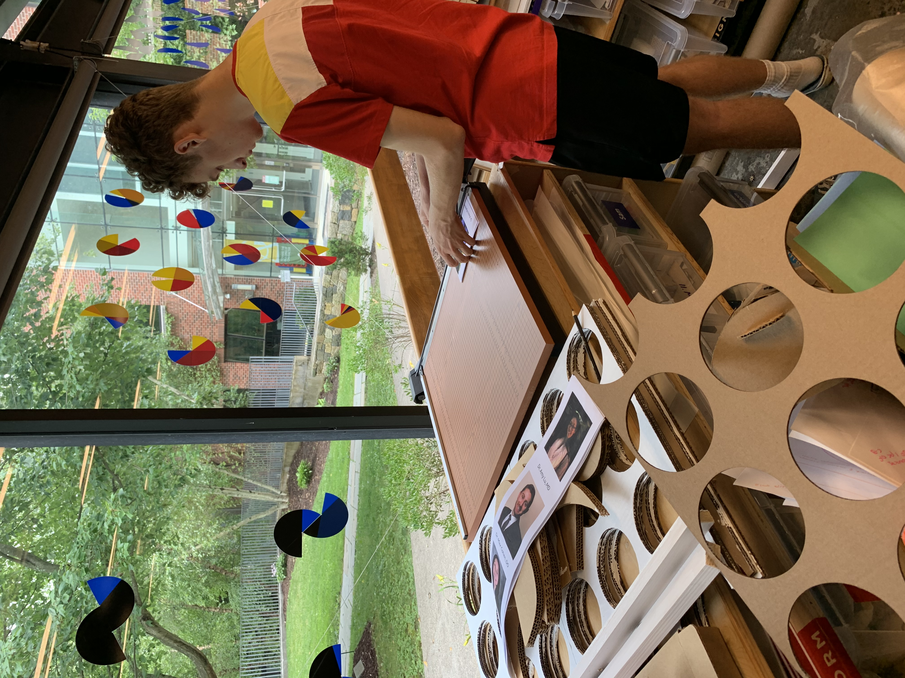
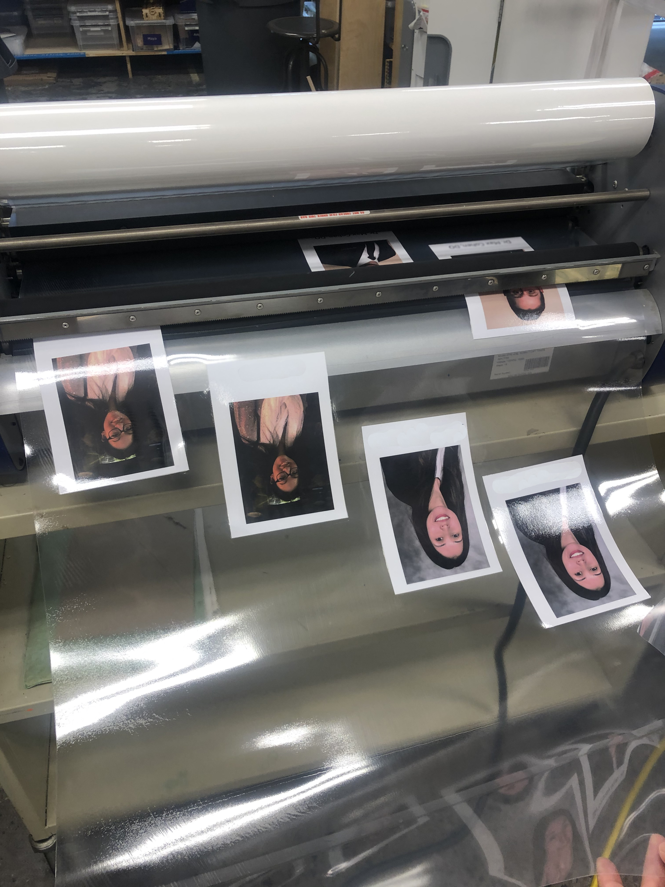
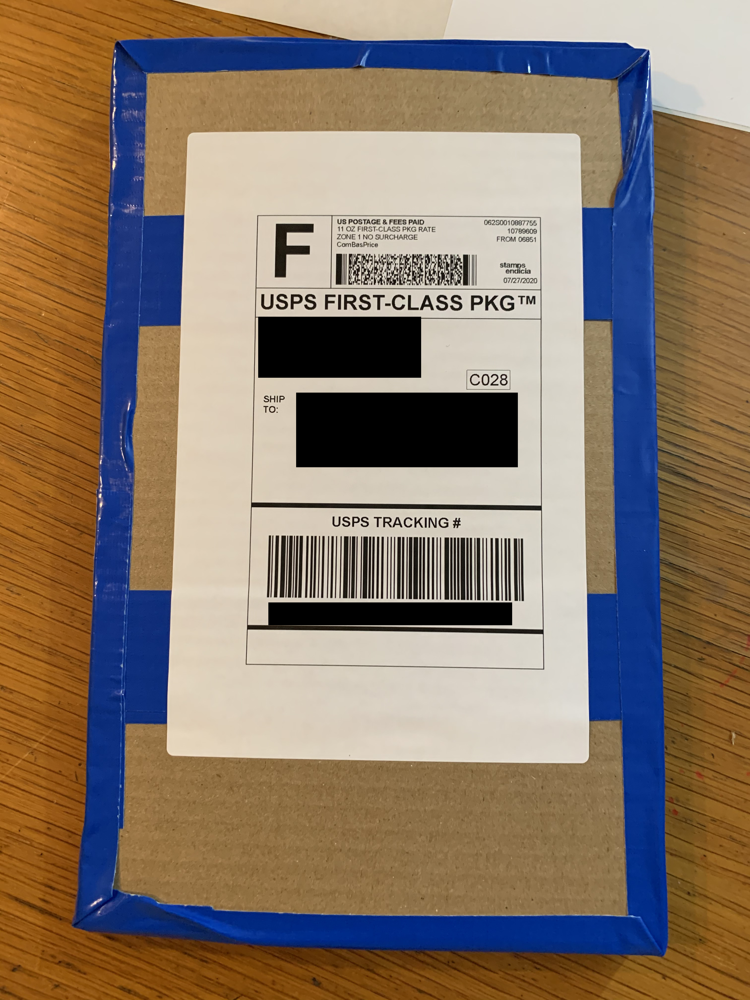

 




When the coronavirus hit NY and our region in March and we had to shelter in place, we were looking for ways to participate in the effort to support healthcare workers who were running out of PPE. A GA alum, who is currently a medical student at Columbia University connected us with the 92nd St Y in Manhattan and the Columbia University Library who coordinated an effort to collect and assemble 3D printed face shield parts. I set up several of the GA 3D printers in my garage and ordered supplies so I could have a 3D printing lab for making visors for the face shields. These were the files that we used: Guide and Design for Rapidly Produced Face Shields. We sent off a total of 200 visors.
We were informed that our visors were part of the shipment that went to Elmurst Hospital in Queens, one of the hardest hit hospitals in NYC. We were sent pictures of the healthcare workers with their 3D printed visors. It was incredibly moving to see.
After there was less demand for visors we shifted gears and started a new project for healthcare workers. I came across the PPE Portrait Project , a social practice art project developed by Mary Beth Heffernan to improve Ebola care. This seemed like a great project to undertake over the summer. One that could be impactful and continue to use our machines (large format printer and laminator) in the lab. I reached out to Dr. Courtney Spada, peditrician and science teacher, who is working with a group of students on a medical research project. We brought these students into the fold who took the lead on the project which included: outreach, correspondence, file collection and organization, formatting and fabrication, and sending off the finished portraits to the healthcare workers. Students coordinated and kept track of all the parts of the project through Google docs. With social distancing, we had one student do the lab work and sending. To date we have sent out one batch, but have several in the works, and continuing to spread the word to hospitals and medical facilities who would be interested in PPE Portraits.
